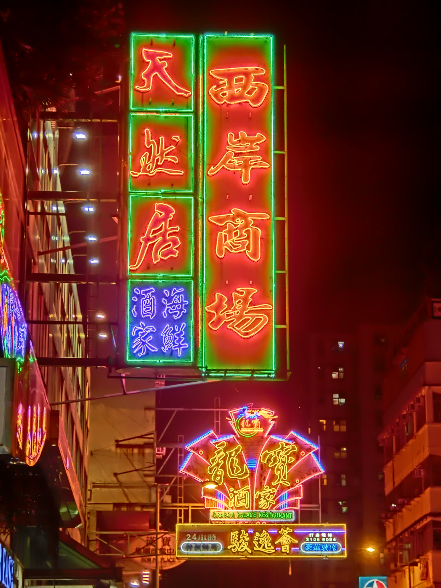
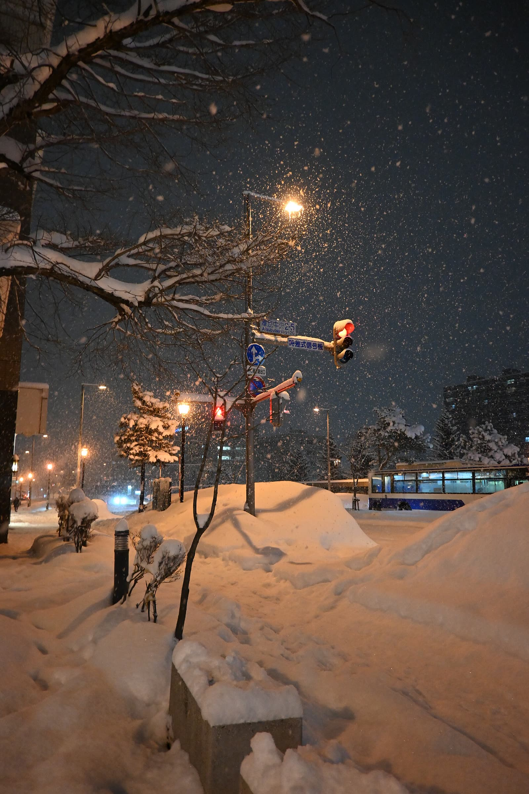
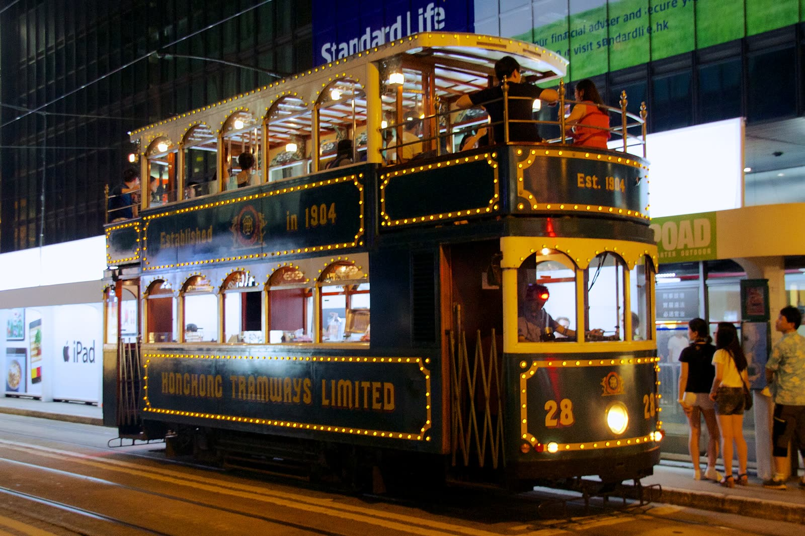
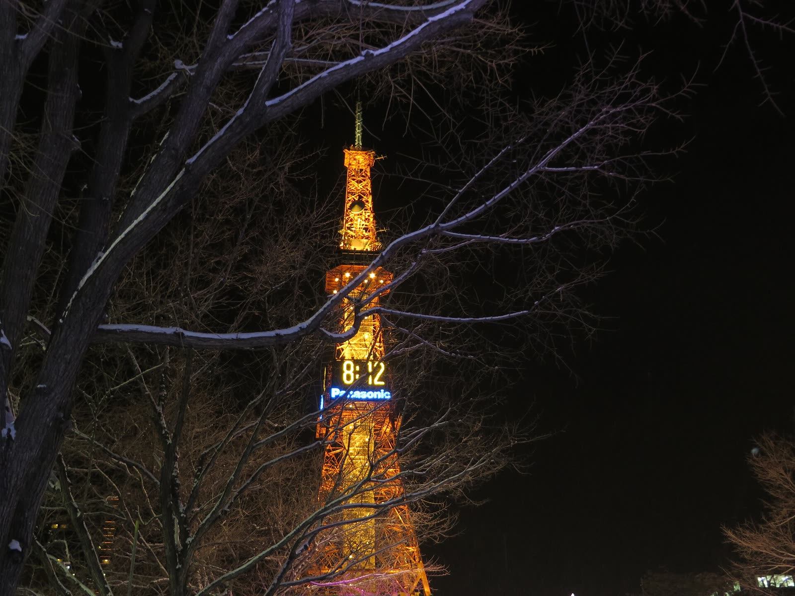

서버 확인 중
정원 –/30
48시간소개팅
여행하며 상대를 알아가는 소개팅. 여행 취향 카드 16장을 고르면, 나와 온도가 같은 도시와 그 도시의 사람을 찾아 48시간 여행을 보내 드립니다.
출발카드 16장
도착하와이 · 홍콩 · 삿포로
체류48시간


탑승 수속
학번과 이름은 정원(30명) 확인용으로만 저장하며, 이 페이지나 GitHub 어디에도 공개되지 않습니다. 다른 가입자의 정보는 누구도 볼 수 없고, 과제가 끝나면 삭제합니다. 이미 가입했다면 같은 학번·이름으로 다시 들어오면 됩니다.
48시간의 일정표
조건표를 채우는 대신, 여행에서 실제로 부딪히는 장면을 고릅니다. 고른 답은 점수표가 되고, 그 성향은 여행 이벤트에서 다시 시험받습니다. 마지막에는 모든 계산을 그대로 보여 드립니다.
출발 전
여행 장면 카드 16장 고르기한 장에 3초
여행 온도로 목적지 발권0~12점
공항
같은 도시 사람 중 성향이 가까운 3명성향 벡터
한 명을 골라 탑승직접 선택
48시간
12시간마다 이벤트 하나, 모두 넷호감도 변화
도착 후 계산 과정 공개처음부터 재생
손에 남는 것: 목적지, 동행, 그리고 그 이유48시간


누구와 떠날까요
또래를 원하는지는 카드에서 따로 묻습니다. 나이는 그 기준점으로만 씁니다.
정답은 없습니다. 두 장면 중 더 나다운 쪽을 고르세요. 한 장에 3초면 충분합니다.
고른 답은 마지막에 모두 공개됩니다
0 차가움12 뜨거움
함께 탈 사람을 고르세요
나 → 상대0
상대 → 나0
이렇게 계산했습니다
카드에서 고른 답이 어떻게 도시와 사람, 여행 결과가 됐는지 처음부터 다시 재생합니다.